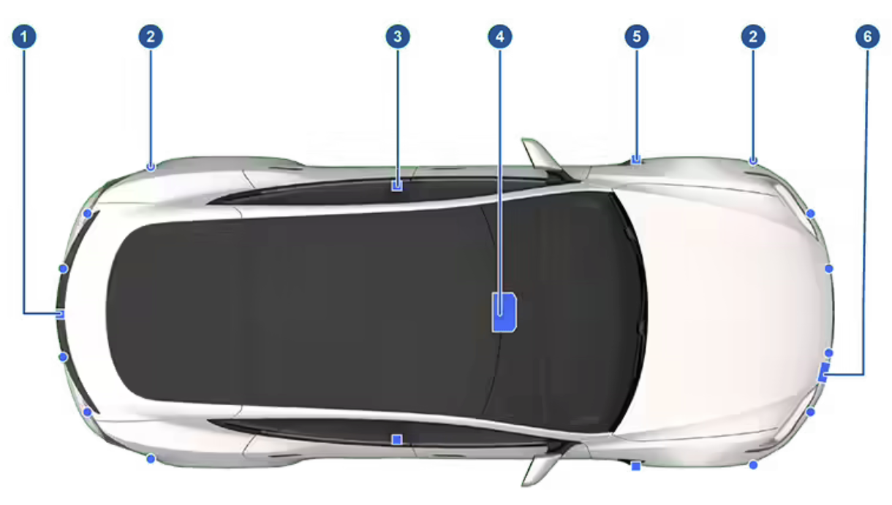

About Autopilot
How It Works
Your Model S includes the following components that actively monitor the surrounding area:
- A camera is mounted above the rear license plate.
- Ultrasonic sensors are located in the front and rear bumpers.
- A camera is mounted in each door pillar.
- Three cameras are mounted to the windshield above the rear view mirror.
- A camera is mounted to each front fender.
- Radar is mounted behind the front bumper.
Model S is also equipped with high precision electronically-assisted braking and steering systems.
Note
Ensure all cameras and sensors are clean before each drive. See Cleaning Cameras and Sensors for more information. Dirty cameras and sensors, as well as environmental conditions such as rain and faded lane markings, can affect Autopilot performance.
Active Safety Features
These Active Safety features are designed to increase your safety:
- Lane Assist (see Lane Assist)
- Collision Avoidance Assist (see Collision Avoidance Assist)
- Speed Assist (see Speed Assist)
You can enable/disable some of these features and in some cases, control how they work. To access settings for these features, touch Controls > Autopilot.
Autopilot Features
Note
Depending on market region, vehicle configuration, options purchased, and software version, your vehicle may not be equipped with all features listed below, or a feature may not operate exactly as described.
These Autopilot convenience features are designed to reduce driver workload:
- Traffic-Aware Cruise Control (see Traffic-Aware Cruise Control)
- Autosteer (see Autosteer)
- Auto Lane Change (see Auto Lane Change)
- Autopark (see Autopark)
- Summon (see Summon)
- Stop Light and Stop Sign Warning (see Stop Light and Stop Sign Warning)
- Navigate on Autopilot (see Navigate on Autopilot)
- Traffic Light and Stop Sign Control (see Traffic Light and Stop Sign Control)
You can enable/disable some of these features and in some cases, control how they work. To access settings for these features, touch Controls > Autopilot.
Drive to Calibrate Cameras
Model S must maneuver with precision when Autopilot features are being used. Therefore, before some features can be used for the first time or after some types of service repairs, cameras must complete a self-calibration process. For your convenience, the instrument panel displays a progress indicator.
When calibration is complete, Autopilot features are available for use. Calibration typically completes after driving 20-25 miles (32-40 km), but the distance varies depending on road and environmental conditions. For example, calibration completes quicker when driving on a straight road with multiple lanes, such as a freeway or highway, with highly-visible lane markings (in the driving lane as well as the adjacent lanes). Contact Tesla only if your Model S has not completed the calibration process after driving 100 miles (160 km) in the described conditions.
If a camera has shifted from its calibrated position (for example, the camera or windshield was replaced), you must clear the calibration. To do so, touch Controls > Service > Camera Calibration > Clear Calibration. When the calibration is cleared, Model S repeats the calibration process. While this helps re-calibrate the cameras in many cases, Clear Calibration may not resolve all camera and sensor concerns.
Note
The self-calibration drive process is only applicable to Model S vehicles built after approximately October 12, 2016.
Note
To calibrate, cameras require highly-visible lane markings in both the driving lane and adjacent lanes (at least two lanes over on each side of the vehicle). For best results, drive in the middle lane of a freeway or highway (ideally with at least five lanes) that has clear lane markings and minimal traffic.
Note
If you attempt to use a feature that is not available until the calibration process is complete, the feature is disabled and the instrument panel displays a message.
Note
Model S must repeat the calibration process if the cameras are serviced by Tesla, and in some cases, after a software update.
Limitations
Many factors can impact the performance of Autopilot components, causing them to be unable to function as intended. These include (but are not limited to):
- Poor visibility (due to heavy rain, snow, fog, etc.).
- Bright light (due to oncoming headlights, direct sunlight, etc.).
- Damage or obstructions caused by mud, ice snow, etc.
- Interference or obstruction by object(s) mounted onto the vehicle (such as a bike rack).
- Obstruction caused by applying excessive paint or adhesive products (such as wraps, stickers, rubber coating, etc.) onto the vehicle.
- Narrow or winding roads.
- A damaged or misaligned body panel.
- Use of gray or aftermarket glass.
- Interference from other equipment that generates ultrasonic waves.
- Extremely hot or cold temperatures.
CAUTION
If a windshield replacement is needed, take your vehicle to Tesla Service. This ensures appropriate handling and mounting of the camera(s). Failure to do so can cause one or more Autopilot features to malfunction.
Warning
The list above does not represent an exhaustive list of situations that may interfere with proper operation of Autopilot components. Never depend on these components to keep you safe. It is the driver's responsibility to stay alert, drive safely, and be in control of the vehicle at all times.
Warning
Advanced safety features may not be available during the calibration period.
Warning
Re-calibrating the cameras or sensors on the touchscreen is not a substitute for checking the physical positioning and condition of these components. Walk around your vehicle and inspect the cameras and sensors for physical damage. Incorrectly calibrated or positioned cameras and sensors may limit or disable the use of safety features. Contact Tesla if you suspect lingering issues.
Cleaning Cameras and Sensors
To ensure the various Autopilot components can provide information that is as accurate as possible, keep them clean and free of obstructions, condensation, or damage (see Cleaning).
Condensation can form inside the camera enclosures, especially if you park your vehicle outside in cold or wet conditions. The instrument cluster may display an alert stating that a camera is blocked and that some or all Autopilot features may be temporarily restricted until the camera vision is clear. To proactively dry the condensation, precondition the cabin by setting it to a warm temperature, turning the windshield defroster on, and directing the front air vents toward the door pillars (see Mobile App).
CAUTION
Do not wipe an exposed lens with your hands or a cloth in an attempt to remove dirt or debris. The debris can damage the surface of the lens when wiped.
CAUTION
Do not use chemical-based or abrasive cleaners. Doing so can damage surfaces.
CAUTION
Do not clean an ultrasonic sensor or camera lens with a sharp or abrasive object that can scratch or damage its surface.